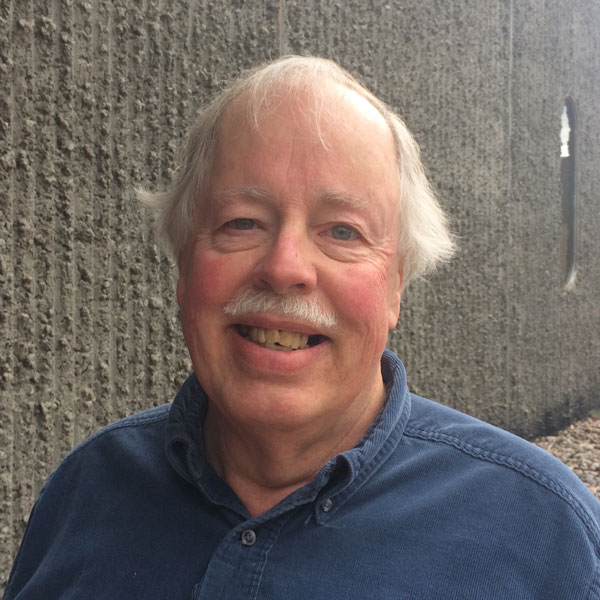
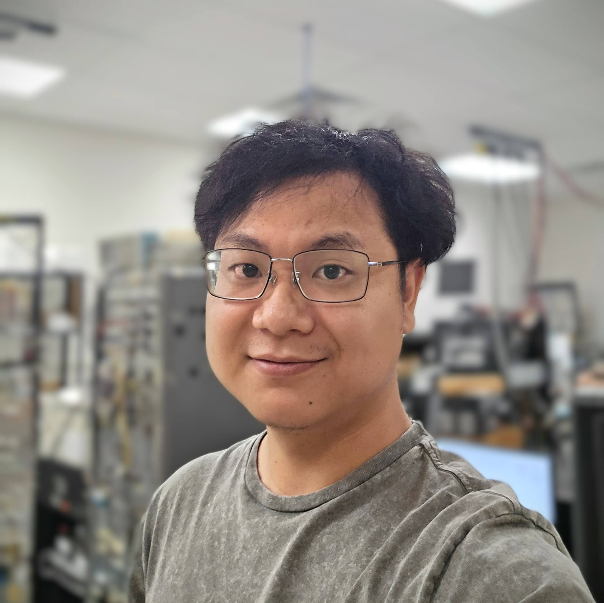
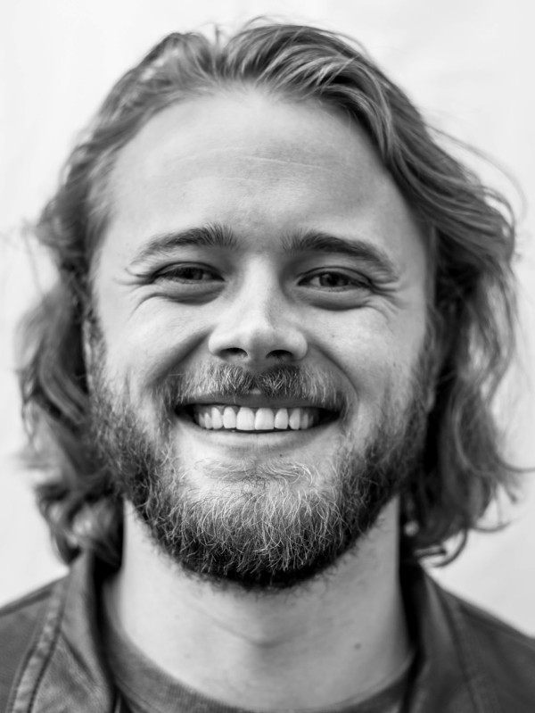
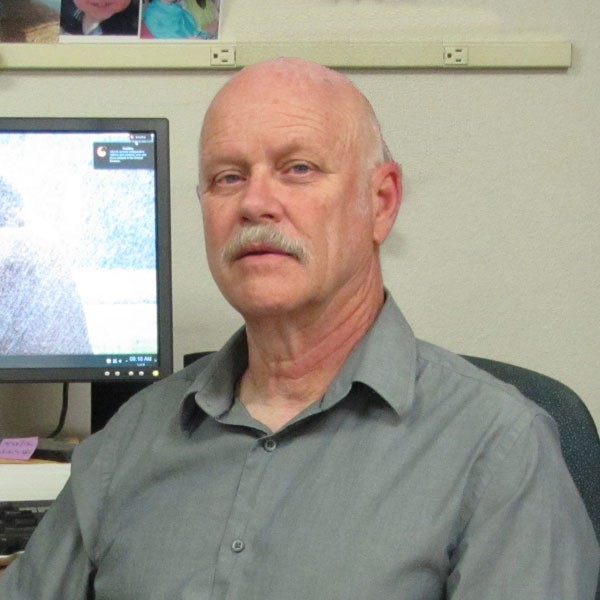
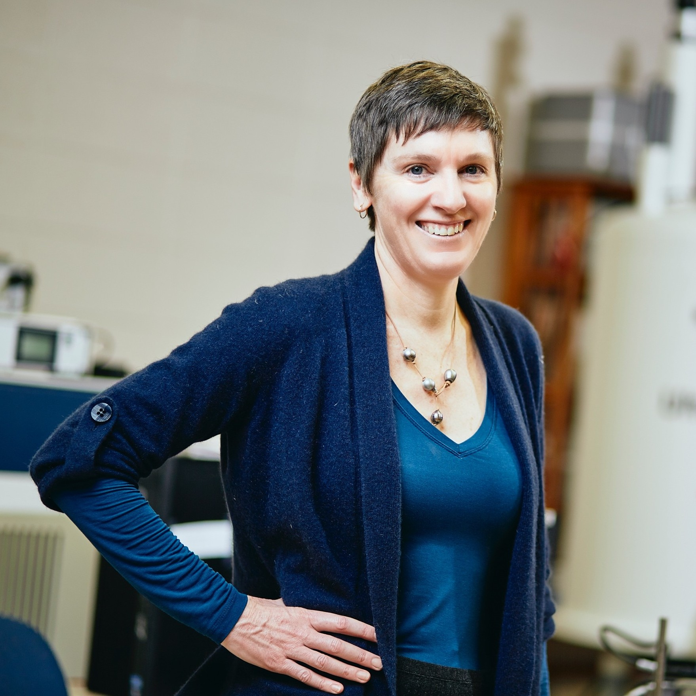
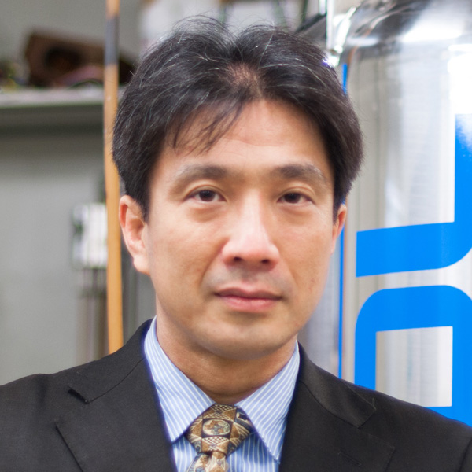
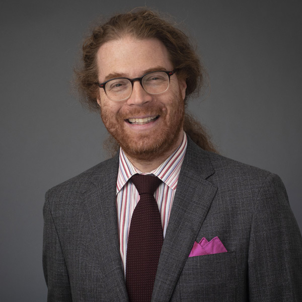

Mark started his teaching career at College of William and Mary before moving to Washington University in St. Louis where he was a professor for 31 years. His group used NMR to study metal-hydrides with potential applications for hydrogen fuel storage. His interests evolved from molecular rotations and diffusion in molecular solids to systems at high pressures, including development of diamond-anvil cell NMR. He was also involved in use of hyperpolarized helium-3 for the study of ventilation and micro-structure in human lungs. He retired from his professorship to join ABQMR where he has worked on earth's-field NMR and other development of NMR techniques and hardware.
msc@wuphys.wustl.edu

Hilary joined ABQMR in 2016 as a postdoctoral fellow after receiving her PhD in Chemical Engineering from the University of Cambridge. She became a staff scientist two years later, was elected vice president of ABQMR in 2019 and president in 2020. Prior to starting her PhD, she had used MR to study bacterial and algal alginate gels at Montana State University and silica gels at Chalmers University, Sweden. She was funded by the Gates-Cambridge Scholarship and during her PhD she significantly enhanced the speed of the ultrashort echo time (UTE) pulse sequence. She was able to acquire 1D and 2D images of millisecond scale processes, and applied it to imaging of bubble dynamics in a model fluidized bed. At ABQMR she enjoys the challenges that each new project brings and is continually learning about the breadth of applications in which NMR can be useful.
h.fabich@abqmr.com

Peng Lei received his Ph.D. in Chemical Engineering at Montana State University in the Magnetic Resonance (MR) laboratory. During his graduate program, he used NMR techniques to investigate ice recrystallization in biologically impacted ice and frozen media. His work provided unique data to characterize the unfrozen vein network distribution and structure in frozen porous media. He joined ABQMR in 2022 and is excited to explore the application of NMR theory in hardware and to apply this to building new NMR systems.
penglei@abqmr.com

Jake has a Bachelor of Computer Science from the University of Arizona.
He has been at ABQMR since January 2024.
Since then he has developed a GUI for ABQMR’s Soder-Spec (Software Defined Radio Spectrometer) capable of acquiring FIDs, Spin Echos, CPMGs, and Inversion/Saturation recovery pulse sequences.
It can analyze T1 and T2 decays, phase data, find 90 and 180 degree pulse times, schedule experiments, save/load/export data, and more.
He has been on many different NMR projects filling several different roles.
From being a research assistant who runs experiments and acquires data to a data scientist who processes raw data and presents results to 3D printing and design to soldering electronics,
Jake has found ABQMR to be a very unique and rewarding place to work.
j.davis@abqmr.com

Steve received his Ph.D. at Ohio State (1982) in Aeronautical/ Astronautical Engineering. His expertise is NMR imaging, hydrodynamics, blood flow, and computing. He co-founded New Mexico Resonance and served as its president before joining ABQMR. He pioneered the use of NMR for the study of fluid flows such as of gases, porous media, and of non-Newtonian fluids, especially concentrated suspensions. He is a reviewer for Journal of Applied Physiology, Journal of Rheology, and ASME Transactions Biomedical Engineering, as well as DOE/SBIR proposals, and has been Adjunct Professor of Mechanical Engineering, University of New Mexico. Steve was elected president of ABMQR in 2019 and vice president in 2020.
salto@nmr.org

Sarah Codd is co-director of the Magnetic Resonance Lab and a Professor in the Department of Mechanical and Industrial Engineering at Montana State University. Her research focuses on technique development, spatially resolved studies of gas in ceramics, flow and diffusion studies in porous media, and investigation of fluid dynamics in hydrogels, biofilms, cellular suspensions and polymer electrolyte membranes.
Sarah grew up in New Zealand, comparable in beauty to Montana, and goes back most years for a mid-summer ski vacation. She received her PhD in Physics from the University of Kent at Canterbury in 1996 and held research positions in England, New Zealand, Germany and New Mexico before moving to Montana in 2002.
scodd@montana.edu
Eiichi performed his first NMR experiment as a grad student at University of Washington in 1960. He worked at Los Alamos before coming to Lovelace Medical Foundation, Albuquerque, in 1985 to do flow NMR/MRI. Current projects include Earth's field NMR for detection of leaked oil in the arctic and development of portable single-sided NMR detector. He is past chair of AMPERE's Division of Spatially Resolved NMR was on the editorial board of Journal of Magnetic Resonance. He co-authored an early how-to NMR book that was published in 1981 and still in print (in 2016) and edited a collection of fundamental papers in biomedical NMR as well as co-edited several conference proceedings.
eiichi@abqmr.com

Tomoyuki received his PhD at the University of Tsukuba, Japan, in the laboratory of Prof. Katsumi KOSE. He spent three months in New Mexico Resonance while he was a graduate student and performed stray field imaging. He incorporated MRTechnology, Inc in Japan (1999) and has been its president ever since. He developed a compact Windows(R)-based MRI console which led to a MR-Microscope with an 1.0T permanent magnet having a 60mm air gap and a compact mouse MRI system with modified Halbach permanent magnet. More recently, he and his collaborators developed a software-based pulse programmer for a digital NMR/MRI transceiver and applied it to superconducting magnets including ultra-high filed magnets up to 14.1 Tesla. He has been on the board of ABQMR since its inception.
haishi@mrtechnology.co.jp

Matt is a physicist, tool-builder, and inventor whose research bridges the spectrum from fundamental physics to applied bioimaging work in the field of MRI. He established the Low-Field MRI and Hyperpolarized Media Laboratory at the Athinoula A. Martinos Center for Biomedical Imaging at Massachusetts General Hospital/Harvard Medical School to focus on the continued development of new hyperpolarization methods and MRI-based tools. The Rosen Lab focuses on new methods and tools to enable unconventional approaches to MRI scanner construction. This includes the development of new acquisition strategies for robust ultra-low magnetic field implementations of MRI focused on brain imaging. The laboratory also explores opportunities provided by hyperpolarization including in vivo Overhauser DNP, SABRE, and spin-exchange optical pumping. His interests also include new quantitative strategies for the acquisition and the reconstruction of highly-undersampled imaging data including neural network deep learning based approaches such as AUTOMAP that leverage low-cost scalable-compute. Matt also co-directs the Center for Machine Learning at Martinos.
msrosen@mgh.harvard.edu